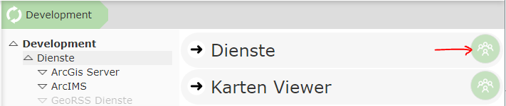
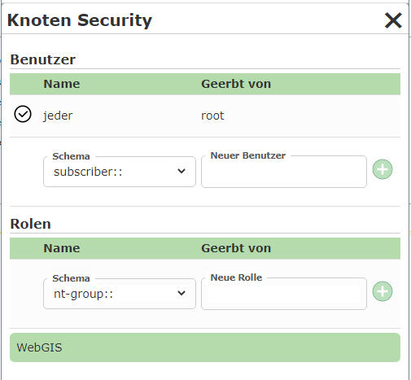
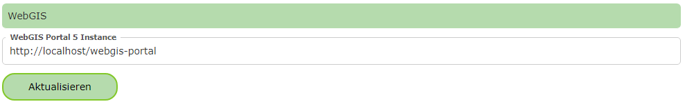
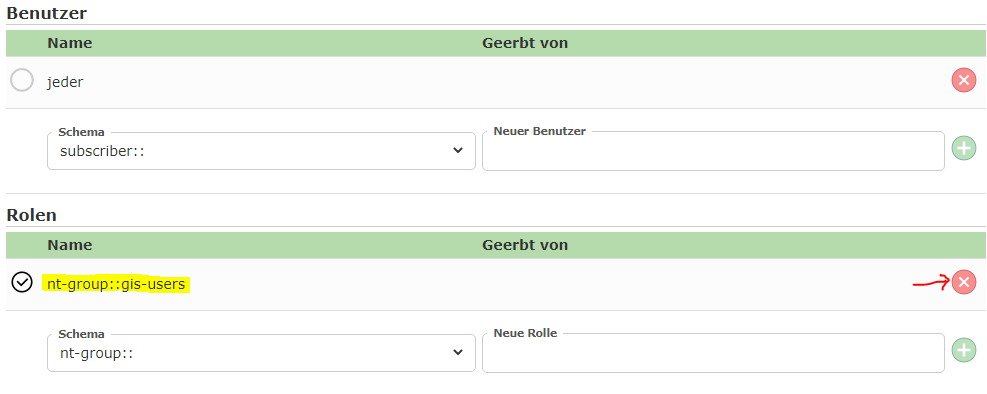
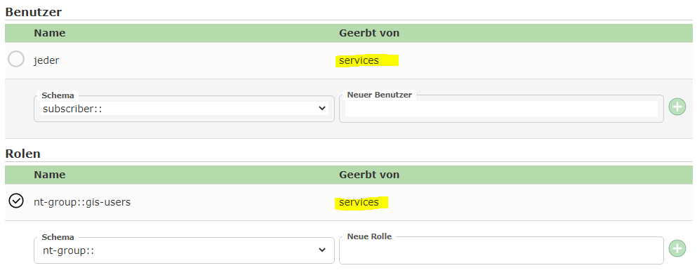
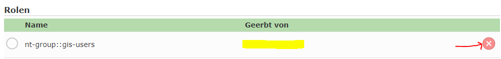
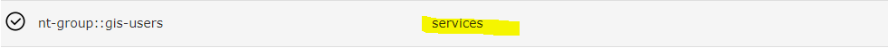
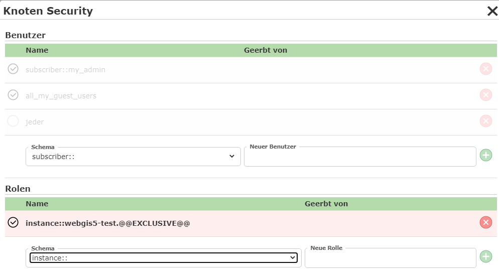
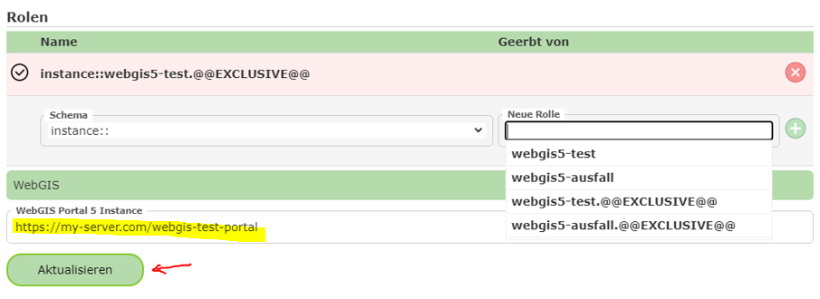

Permissions (Security)¶
By default, all nodes of the CMS tree are visible to every user (who can see maps with services from this CMS).
If a user is allowed to use a map, for example, they can theoretically add all other services from the CMS to the map via the Add services
button in the Map Viewer (provided this button is offered in the map).
If this is not desired, individual nodes of the CMS tree can be secured with permissions in the CMS. If a node is not authorized for a user, neither the node nor the nodes below it are visible to that user. If, for example, the node of a map service is secured with permissions, these permissions also apply to all queries and edit themes of this service.
Note
The permissions of a node are inherited by all nodes below it.
Naturally, this also makes it possible, for example, for a service to be visible and queryable for all users, while editing of topics is reserved for a restricted group of users only. And here too, individual edit topics can again be authorized differently.
Securing a Node with Permissions¶
Every node in the CMS can be secured with permissions. To do this, click the permissions icon next to the corresponding node in the list:

This opens the node security dialog for this node. By default, the following is shown here for an unprotected node:

In principle, individual users or user groups (roles) can be authorized. The user Everyone is a special user here that corresponds to all real users. If the user Everyone is authorized for a node, all users can see this node.
Depending on the configuration of the WebGIS instance, different schemas are available for users and groups. A schema
describes the method used to perform authentication. For Windows authentication, the corresponding
schemas are, for example, nt-user:: and nt-group::.
Which WebGIS instance the login schemas refer to can be seen in the dialog under the WebGIS section:

Clicking the Update button refreshes the selection lists for the schemas accordingly.
If, for example, you want to authorize a group for a node, you must first select the correct schema and then enter the group name. Depending on the schema, suggestions are shown after entering a few characters. Clicking the plus button afterwards adds this group to the list for this node.

In this view, the default permission for Everyone was also removed (the checkbox is not checked). The delete icon removes a permission again. Only permissions that were explicitly set for this node can be removed. Inherited permissions can only be overridden (by checking or unchecking).
If a permission is inherited from a parent, the path of the node where the actual permission was set is shown:

If you want to revoke an inherited permission for the current node, this is done by unchecking the corresponding permission. This sets the corresponding permission for this node anew, and the inheritance is overridden:

Since the permission has now been set anew for this node, it can be removed again with the delete icon. After that, the inherited permission would be shown again:

Instance Roles¶
Among the permissions in the CMS, there is a special role with the prefix instance::.
These permissions relate to a specific WebGIS instance.
One use case would be, for example, giving a node exclusive rights for a WebGIS test instance.

This node would then not be visible for other instances (production system). This makes it possible to ensure that, for the entire period during which new map applications are being developed, these changes are not shown in the production system, even if the CMS is published for this instance in the meantime.
Which instance roles are possible for a WebGIS instance is shown via autocomplete when typing. Of course, you must
enter the URL to the corresponding WebGIS portal page and confirm it with Update:

Which instances are possible depends on the operator of the WebGIS instance. They have the option, via the api.config file, to specify
any instance roles:
<add key="instance-roles" value="webgis5-test,webgis5-ausfall"/>
Note
Instance roles should be defined by the operator at the start and should only be extended afterwards where possible. Otherwise, CMS permissions already assigned for the instance might stop working.